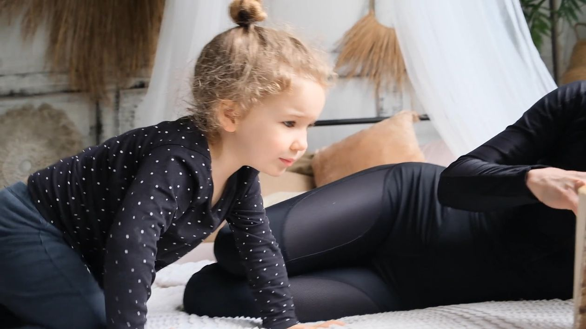
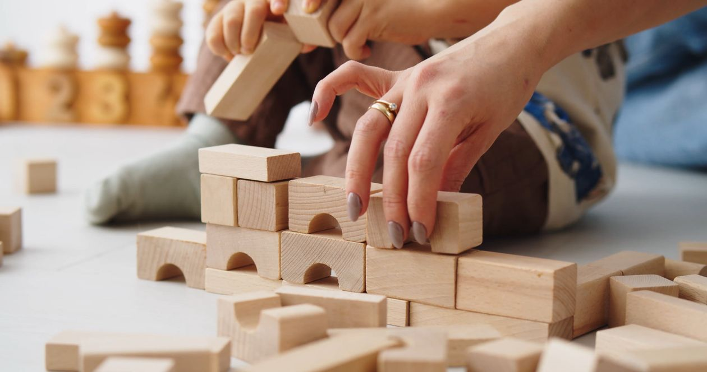

Start with your child.
A moment of play. A new expression. A question you want to remember. Your own observations are a starting point.
WHY RAFIQ EXISTS
RAFIQ brings daily moments, personal observations and the path to specialist support into one calmer space for families.
Our focus today: birth to under 7.

LESS SEARCHING. MORE UNDERSTANDING.
Parents can find plenty of information and still feel unsure what to do next. RAFIQ is being built to connect that information to a clear, manageable next step.
A moment of play. A new expression. A question you want to remember. Your own observations are a starting point.
Keep notes and age-related resources together, so you can return to what matters without searching everywhere.
When you want professional support, organize your questions and explore what a specialist journey could look like.
MORE THAN A CHECKLIST
RAFIQ makes space for the ordinary moments too: a shared game, a favourite story, or something new you noticed today.
Our aim is to help parents stay curious and connected, without turning every moment into a score or a comparison.
Explore a starting point for your family ↗
THIS IS WHERE THEIR STORY GROWS.
Play together. Notice the little things. Grow closer.
WHAT GUIDES THE EXPERIENCE
Personal notes describe what a parent observes. They are not an automatic diagnosis or a measure of a child’s worth.
Age-related resources include source information where provided. Content coverage varies by age; this is not a complete clinically reviewed curriculum.
Parents should be able to review what they choose to include when preparing a conversation with a specialist.
Accounts, bookings, payment and AI responses remain demonstrations. The preview does not collect real payments or create live appointments.
A PAUSE FOR CONNECTION
Reading, playing and listening together are the kinds of everyday moments we want RAFIQ to make room for.
Illustrative stock footage by ArtHouse Studio via Pexels.
WHERE WE ARE TODAY
Our current focus and our future ambitions are different things. We want families to see that clearly.
CURRENT PROTOTYPE
Demo data stays in this browser. Use sample details rather than sensitive child information.
FUTURE DIRECTION
These are future plans, not services available today.
Explore the preview, or tell us what your family needs.